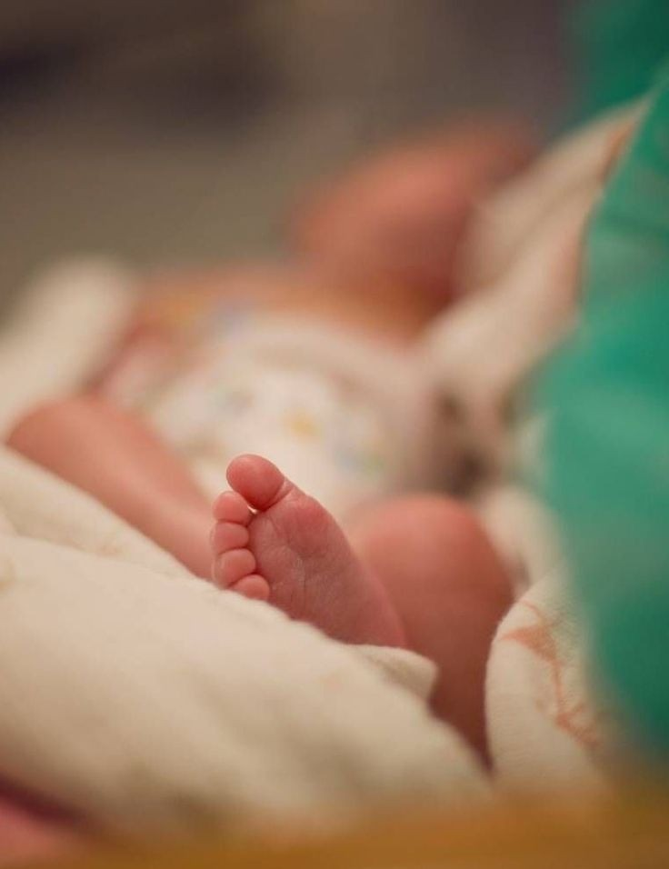
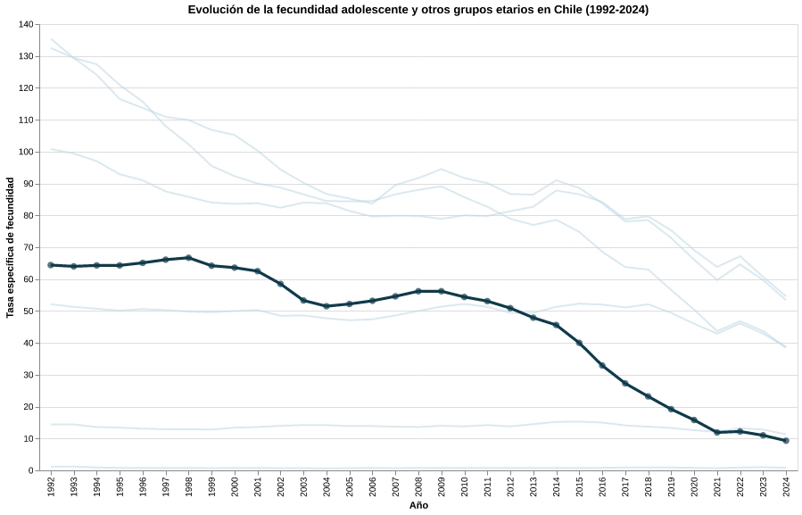
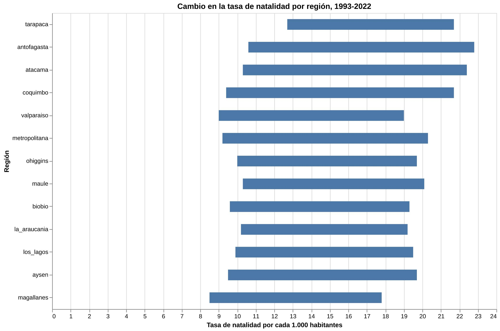
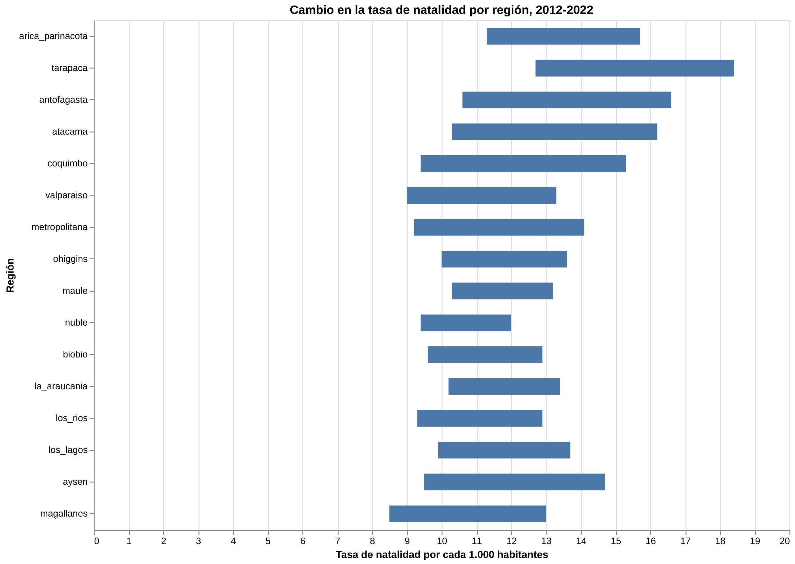
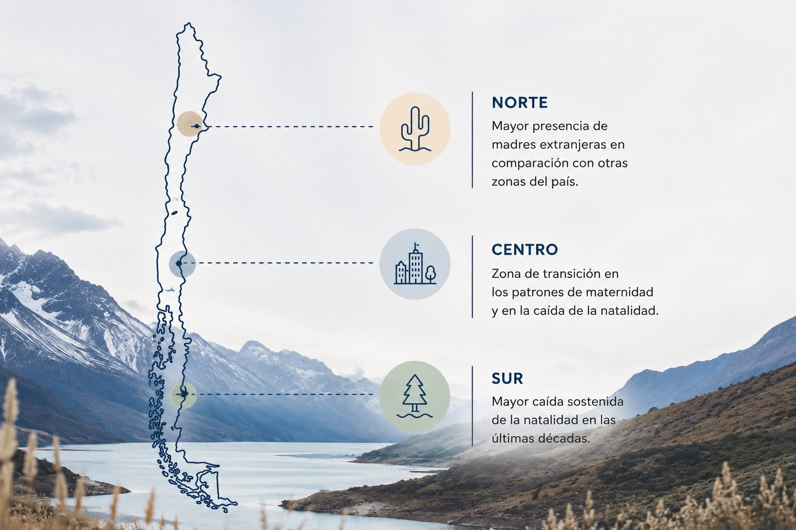

Debate público y datos
La "crisis" de natalidad no se explica con una sola cifra
En 2026, la baja natalidad volvió al centro del debate público con el Plan Chile Renace, una estrategia del Gobierno que busca enfrentar la disminución de nacimientos en el país. La propuesta instaló una pregunta de fondo: ¿qué está bajando realmente cuando hablamos de natalidad?
Los datos muestran que la respuesta no es tan simple. La caída existe, pero no se expresa de una sola manera: cambia según el indicador que se mire, la edad de las madres, el territorio y la composición de los nacimientos.
Esta webstory contrasta el debate público con los datos disponibles para mostrar que la baja natalidad en Chile no es solo una disminución general de nacimientos, sino una transformación demográfica y social más compleja.
El debate llegó antes que las respuestas
El conflicto
Mientras el debate público habla de una crisis de natalidad, los datos muestran que una de las caídas más marcadas está en la maternidad adolescente. No todas las bajas significan lo mismo.
El Plan Chile Renace instaló la baja natalidad como una preocupación de política pública. La iniciativa busca identificar las barreras que enfrentan las personas que quieren tener hijos, como el costo de la vida, el acceso a la vivienda, los cuidados, la corresponsabilidad, la conciliación laboral y familiar, la salud reproductiva y los cambios culturales asociados a la formación de familias.
La Comisión Asesora Presidencial del plan está integrada por 16 expertos y trabaja sobre ocho ejes para elaborar propuestas frente a la caída de la natalidad. Sin embargo, al mirar los datos, el diagnóstico se vuelve menos lineal: no basta con decir que "nacen menos niños" porque la baja cambia según edad, indicador y territorio.
Por eso, más que preguntar solo cómo aumentar los nacimientos, esta webstory busca entender qué partes de la natalidad están cambiando y qué revela eso sobre el país.
El dato que encendió las alarmas
Entre 1992 y 2024, los principales indicadores de natalidad en Chile disminuyeron de forma marcada. La baja aparece en el promedio de hijos por mujer, en los nacimientos por cada mil habitantes y en la cantidad total de nacidos vivos.

La comparación permite dimensionar la magnitud del fenómeno. La baja aparece en el promedio de hijos por mujer, en los nacimientos por cada mil habitantes y en la cantidad total de nacidos vivos. Pero este gráfico es solo el punto de partida: para entender qué hay detrás de la caída, es necesario mirar edades, territorios y composición de los nacimientos.

La baja de nacimientos no solo habla de cifras: también abre preguntas sobre cómo Chile imagina la maternidad, la familia y el futuro.
La baja más fuerte está donde menos se mira
La fecundidad adolescente muestra una de las caídas más marcadas del período. Este dato cambia la lectura del fenómeno: parte importante de la disminución no solo habla de menos nacimientos, sino también de una transformación en las edades en que ocurre la maternidad.

Si el debate público se concentra únicamente en la caída total de nacimientos, puede dejar fuera un punto clave: la maternidad adolescente ha disminuido de forma sostenida. Esto no necesariamente significa una "pérdida" de natalidad, sino también cambios en la educación, acceso a información, proyectos de vida y decisiones reproductivas.
Un país, distintas caídas
La baja natalidad también tiene una dimensión territorial. Al ordenar las regiones de norte a sur y observar sus variaciones, el fenómeno deja de verse como una caída uniforme y empieza a mostrar diferencias internas.


El primer gráfico compara la evolución entre 1993 y 2022 solo para las regiones históricas que ya existían al inicio del período. El segundo gráfico compara el cambio entre 2012 y 2022, incorporando todas las regiones actuales del país. Esta diferencia permite evitar interpretaciones erróneas por cambios administrativos, como la creación de nuevas regiones.
Al tratarse de una comparación entre dos años, la distancia entre el punto inicial y el punto final muestra la magnitud del cambio. Por eso, el foco no está solo en qué región tiene una tasa más alta o más baja, sino en cuánto se movió cada territorio durante el período observado.
Mirar el territorio permite ver que la natalidad no cambia igual en todo Chile
Cada zona presenta ritmos y contextos distintos. El territorio muestra que la transformación demográfica no ocurre de la misma forma en todo el país, por lo que observar las diferencias regionales permite comprender mejor este fenómeno.

El norte cambia la lectura del fenómeno
La nacionalidad de la madre agrega una nueva dimensión al análisis de la natalidad. En algunas regiones del norte, la presencia de madres extranjeras representa una proporción importante de los nacimientos, lo que muestra que la baja natalidad no se expresa de la misma manera en todos los territorios.
Este dato permite complejizar la lectura del fenómeno: aunque Chile registra una baja general de nacimientos, en ciertos territorios la migración también influye en la composición de la natalidad. Por eso, analizar el norte ayuda a entender que no se trata solo de cuántos niños nacen, sino también de quiénes son las madres y en qué contextos ocurre la maternidad.
Si nacen menos niños y aumenta el peso de las personas mayores, el país también deberá repensar sus redes de cuidado.
Lo que está en juego no son solo nacimientos
La baja no es solo una cifra demográfica. También abre preguntas sobre el futuro del país, el envejecimiento de la población, los cuidados, la educación, la salud y las políticas públicas necesarias para acompañar estos cambios. Si nacen menos niños y aumenta el peso relativo de las personas mayores, Chile tendrá que enfrentar nuevas demandas sociales y repensar cómo organiza sus sistemas de apoyo.
Además, los datos muestran que este fenómeno no se expresa de una sola manera. La caída aparece en los indicadores generales, en la fecundidad adolescente, en las diferencias regionales y en la composición de los nacimientos según la nacionalidad de la madre. Por eso, no se trata únicamente de que Chile tenga menos nacimientos, sino de que también están cambiando las condiciones y formas en que las personas proyectan la maternidad, la familia y el futuro.
El hallazgo: no basta con contar nacimientos
El principal hallazgo no está en comprobar que la natalidad bajó, sino en entender qué tipo de baja está ocurriendo. Los datos muestran que la disminución no se reparte de forma pareja: cambia según la edad de las madres, el territorio y la composición de los nacimientos.
Esa diferencia importa porque puede modificar la forma en que se piensa el problema público. Si la baja se interpreta solo como una crisis de nacimientos, la respuesta puede quedar centrada en incentivar tener hijos. Pero al mirar las distintas capas del fenómeno, aparecen otras preguntas: quiénes están postergando la maternidad, dónde se concentra la caída y qué condiciones hacen más difícil formar familia.
Metodología y fuentes
Esta investigación fue construida a partir de datos del Instituto Nacional de Estadísticas (INE) y del Departamento de Estadísticas e Información de Salud (DEIS).
Las bases fueron limpiadas y organizadas para analizar la evolución de los nacimientos, la tasa global de fecundidad, la maternidad adolescente, las diferencias territoriales y la nacionalidad de la madre.
Las visualizaciones fueron elaboradas utilizando Python, Pandas, Altair, HTML, CSS y JavaScript. Para contextualizar la discusión actual, también se revisaron antecedentes sobre el Plan Chile Renace y el debate público en torno a la baja natalidad.